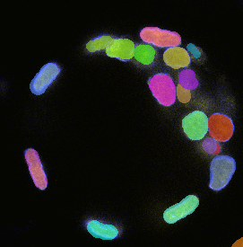
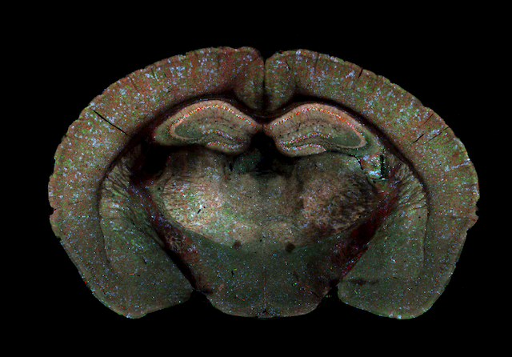
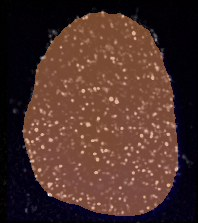
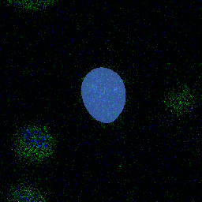

Each demo is a real IIIF service, not a picture of one. The
info.json below every demo is a live endpoint: paste it into Mirador, the Universal
Viewer, or any other IIIF client and the image opens there, with no knowledge of OME-Zarr on the
client's part. Every demo also carries a IIIF Presentation manifest, so each one opens directly
in Mirador from its card.
Each demo also links to the original OME-Zarr store in vizarr, so you can
compare what a IIIF client sees against the chunked array the data actually lives in.

Nuclear segmentation
236 z-planes with a segmentation mask on every one. The label picker draws the
mask in ziv's deterministic distinct colours, because all 61 colours this image declares are
the identical grey: rendering the declared table faithfully collapses nineteen nuclei into one
shape.
275 × 271 px · 236 z · 2 channels · 1 label
IIIF image service
https://nishad.github.io/ziv-demos/nuclear-segmentation/info.json
IDR image 6001240, study
idr0062-blin-nuclearsegmentation
(10.17867/10000125).
Blin G, Sadurska D, Portero Migueles R, Chen N, Watson JA, Lowell S. Nessys: A new set of tools
for the automated detection of nuclei within intact tissues and dense 3D cultures.
PLOS Biology 2019. 10.1371/journal.pbio.3000388

Whole brain
255 megapixels in one plane, nine pyramid levels, for deep zoom. Well over the
64-megapixel whole-image cap, so the export declares only the whole-image sizes it actually
wrote rather than advertising renderings it would refuse to serve.
19 120 × 13 350 px · 9 levels · 3 channels
IIIF image service
https://nishad.github.io/ziv-demos/whole-brain/info.json
IDR image 9846152, study
idr0048-abdeladim-chroms.
Abdeladim L, Matho KS, Clavreul S, et al. Multicolor multiscale brain imaging with
chromatic multiphoton serial microscopy. Nature Communications 2019.
10.1038/s41467-019-09552-9

In situ genome sequencing
Its segmentation mask is stored as 64-bit integers, a sample type ziv silently
dropped until recently: the image opened, the label did not, and nothing said so. It now
renders, and a label that cannot be opened is reported by name.
198 × 223 px · 12 z · 6 channels · 18 timepoints · 1 label
IIIF image service
https://nishad.github.io/ziv-demos/genome-seq/info.json
IDR image 13457537, study
idr0101-payne-insitugenomeseq.
Payne AC, Chiang ZD, Reginato PL, et al. In situ genome sequencing resolves DNA
sequence and structure in intact biological samples. Science 2021.
10.1126/science.aay3446

Condensin map
Declares two separate label images, Cell and
Chromosomes, so the picker has a genuine choice rather than a single mask to
toggle. Each is its own multiscale image beside the intensity data.
256 × 256 px · 31 z · 3 channels · 40 timepoints · 2 labels
IIIF image service
https://nishad.github.io/ziv-demos/condensin-map/info.json
IDR image 5514375, study
idr0052-walther-condensinmap.
Walther N, Hossain MJ, Politi AZ, et al. A quantitative map of human Condensins
provides new insights into mitotic chromosome architecture. Journal of Cell Biology
2018. 10.1083/jcb.201801048
Each demo is one command against the published store, with the URL it will be hosted at baked
into every info.json:
ziv export
https://uk1s3.embassy.ebi.ac.uk/idr/zarr/v0.4/idr0062A/6001240.zarr ./nuclear-segmentation --id
https://nishad.github.io/ziv-demos/nuclear-segmentation --planes --labels
The exact commands live in scripts/build-demos.sh,
which regenerates the whole site.